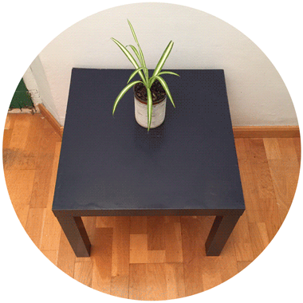
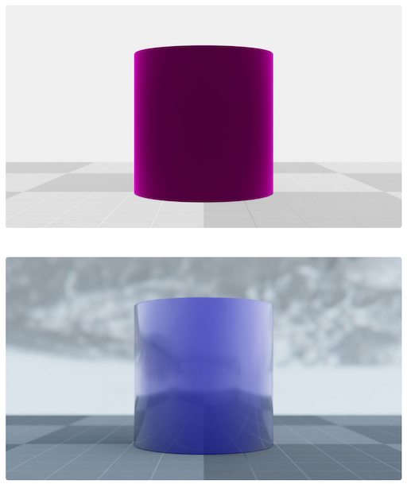
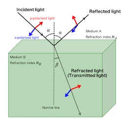
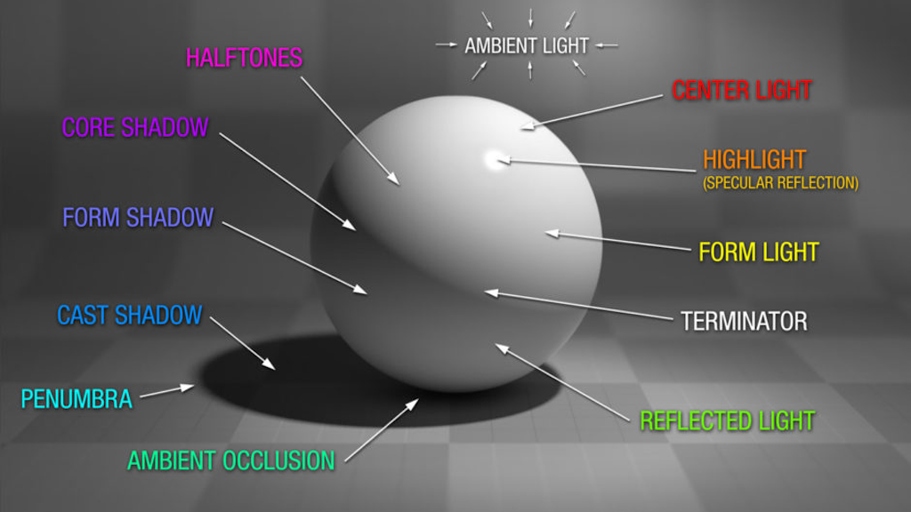
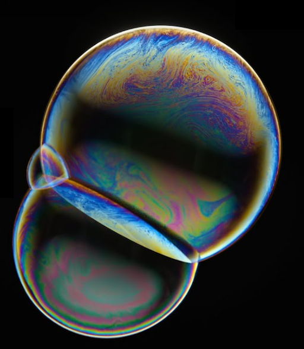
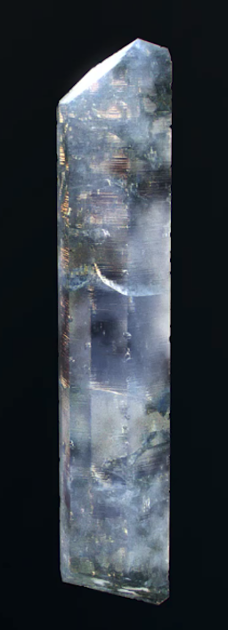

<meta name="viewport" content="width=device-width, initial-scale=1">
<link rel="stylesheet" href="github-markdown.css">
<style>
	.markdown-body {
		box-sizing: border-box;
		min-width: 200px;
		max-width: 980px;
		margin: 0 auto;
		padding: 45px;
	}

	@media (max-width: 767px) {
		.markdown-body {
			padding: 15px;
		}
	}
</style>
<article class="markdown-body">


<h1 id="materials-and-shading-workshop">Materials and Shading Workshop</h1>
<p>Prof. Dr. Lena Gieseke | l.gieseke@filmuniversitaet.de | Film University Babelsberg <em>KONRAD WOLF</em></p>
<h2 id="day-4">Day 4</h2>
<ul>
<li><a href="#materials-and-shading-workshop">Materials and Shading Workshop</a>
<ul>
<li><a href="#day-4">Day 4</a></li>
<li><a href="#what-happened-so-far">What Happened So Far?</a></li>
<li><a href="#recap">Recap</a>
<ul>
<li><a href="#fresnel-effect">Fresnel Effect</a></li>
<li><a href="#shading-interfaces">Shading Interfaces</a>
<ul>
<li><a href="#houdini">Houdini</a></li>
</ul></li>
</ul></li>
<li><a href="#creative-project-development">Creative Project Development</a></li>
<li><a href="#what-next">What Next?</a>
<ul>
<li><a href="#materials--shading">Materials &amp; Shading</a></li>
<li><a href="#your-interests--next-steps">Your Interests &amp; Next Steps</a></li>
</ul></li>
<li><a href="#bye">Bye</a>
<ul>
<li><a href="#----">👋🏻 👋🏼 👋🏽 👋🏾 👋🏿</a></li>
</ul></li>
</ul></li>
</ul>
<!--
h or ?: Toggle the help window
j: Jump to next slide
k: Jump to previous slide
b: Toggle blackout mode
m: Toggle mirrored mode.
c: Create a clone presentation on a new window
p: Toggle PresenterMode
f: Toggle Fullscreen
t: Reset presentation timer
<number> + <Return>: Jump to slide <number>
-->
<h2 id="what-happened-so-far">What Happened So Far?</h2>
<ul>
<li>Intro to Shading</li>
<li>Local Illumination</li>
<li>Local Shading Models</li>
<li>Global Illumination and the Rendering Equation</li>
<li>Implementation of p5’s material</li>
<li>Toon shading I &amp; II</li>
<li>Fresnel Effect</li>
<li>Material interfaces on the example of Houdini</li>
</ul>
<h2 id="recap">Recap</h2>
<hr />
<h3 id="fresnel-effect">Fresnel Effect</h3>
<p><br />
<br />
<br />
<br />
<br />
</p>
<p>Alls above images: <a href="https://www.dorian-iten.com/fresnel/">[Dorian Iten]</a></p>
<p></p>
<p><a href="https://thub.io/filament/Filament.html">[filament]</a></p>
<p>The <a href="https://www.wikiwand.com/en/Fresnel_equations">Fresnel Equations</a> define for transparent materials such as glass and water how much light is reflected vs. how much light is transmitted.</p>
<p>&lt;img src=“img/fresnel_12.”fresnel_12&quot; style=“width:45%;”&gt;</p>
<p><a href="http://physics.thick.jp/Experimental_Physics/Section1/1-7_en.html">[physics.thick]</a></p>
<p>In computer graphics, <a href="https://www.wikiwand.com/en/Schlick%27s_approximation">Schlick’s approximation</a> is a formula for approximating the contribution of the Fresnel factor, shaping the reflection and transmission of light between media.</p>
<div class="sourceCode" id="cb1"><pre class="sourceCode glsl"><code class="sourceCode glsl"><a class="sourceLine" id="cb1-1" title="1"><span class="dt">vec3</span> <span class="fu">schlick</span>(IntersectionData hit, Ray ray) </a>
<a class="sourceLine" id="cb1-2" title="2">{</a>
<a class="sourceLine" id="cb1-3" title="3">    <span class="dt">vec3</span> fresnel = <span class="dt">vec3</span>(<span class="fl">0.0</span>);</a>
<a class="sourceLine" id="cb1-4" title="4"></a>
<a class="sourceLine" id="cb1-5" title="5">    <span class="co">// F ≈ R0 + (1 - R0)(1 − cosθi)^5</span></a>
<a class="sourceLine" id="cb1-6" title="6"></a>
<a class="sourceLine" id="cb1-7" title="7">    <span class="dt">vec3</span> R0 = hit.<span class="fu">material</span>.<span class="fu">color</span>.<span class="fu">rgb</span> * hit.<span class="fu">material</span>.<span class="fu">specular</span>;</a>
<a class="sourceLine" id="cb1-8" title="8">    <span class="dt">float</span> hv = <span class="bu">clamp</span>(<span class="bu">dot</span>(hit.<span class="fu">normal</span>, -ray.<span class="fu">direction</span>), <span class="fl">0.0</span>, <span class="fl">1.0</span>);</a>
<a class="sourceLine" id="cb1-9" title="9">    fresnel = R0 + (<span class="fl">1.0</span> - R0) * <span class="bu">pow</span>(<span class="fl">1.0</span> - hv, <span class="fl">5.0</span>);</a>
<a class="sourceLine" id="cb1-10" title="10">    </a>
<a class="sourceLine" id="cb1-11" title="11">    <span class="kw">return</span> fresnel;</a>
<a class="sourceLine" id="cb1-12" title="12">}</a></code></pre></div>
<h3 id="shading-interfaces">Shading Interfaces</h3>
<h4 id="houdini">Houdini</h4>
<p>Show us your results!</p>
<h2 id="creative-project-development">Creative Project Development</h2>
<p>Develop a project in two randomly assigned groups for the the <em>Shading Appreciation Society</em>.</p>
<p></p>
<p><a href="https://gncrowd.com/article/885/the-power-of-shading--how-to-bring-illustrations-to-life">[designcrowd]</a></p>
<ul>
<li>The project must include material &amp; shading aspects either as visual elements or as topic.</li>
<li>You don’t need to refer to your skill set.</li>
<li>Ideally also collect reference images / create a mood board.</li>
</ul>
<p>Submit your project idea in the exercise folder as .md file.</p>
<ul>
<li>1h for brainstorming and writing the project description.</li>
</ul>
<h2 id="what-next">What Next?</h2>
<h3 id="materials-shading">Materials &amp; Shading</h3>
<p>Seeing and understanding shading in more detail.</p>
<p></p>
<p><a href="https://n-iten.com/light/">[dorian-iten]</a></p>
<p>Writing more complex and custom shading and lighting effects</p>
<ul>
<li>Within a specific context</li>
</ul>
<p>  </p>
<p><a href="https://entagma.com/bubbles-yet-again-implementing-glassners-bubble-triplets-in-vex/">[entagma]</a><a href="https://www.youtube.com/watch?v=TwOjsRtWpBA">[houdini masterclass]</a></p>
<p> ]</p>
<p><a href="https://entagma.com/bubbles-yet-again-implementing-glassners-bubble-triplets-in-vex/">[entagma]</a></p>
<p>Focus on shader programming, e.g. with WebGL</p>
<ul>
<li>Write your own world</li>
<li>Shading as a part of that</li>
</ul>
<p>→ Rendering algorithms</p>
<p>Example:</p>
<ul>
<li>https://www.shadertoy.com/view/lsX3DH</li>
<li>https://www.shadertoy.com/view/Xds3zN</li>
<li>https://www.shadertoy.com/view/wlyfWw</li>
<li>https://www.shadertoy.com/view/WtdBDM</li>
<li>https://www.shadertoy.com/view/ldySDh</li>
<li>https://www.shadertoy.com/view/WtSBzh</li>
</ul>
<p>What for?</p>
<ul>
<li>Artistic expression</li>
<li>Real-time applications</li>
<li>Web content</li>
</ul>
<p></p>
<p><a href="https:/cineshader.com">[cineshader]</a> <a href="https://lusion.co/work">[lusion]</a></p>
<h3 id="your-interests-next-steps">Your Interests &amp; Next Steps</h3>
<p>Brainstorm and summarize what you would like to learn and work on next in regard to materials &amp; shading (assuming you had to dedicate more time for this topic)?</p>
<ul>
<li>Which context, e.g. software</li>
<li>NPR vs. Photorealistic?</li>
<li>Which content, project type, etc.?</li>
<li>…</li>
</ul>
<p>Submit your next steps in the exercise folder as .md file.</p>
<ul>
<li>10 min for brainstorming and 5 min writing.</li>
</ul>
<hr />
<blockquote>
<p>That’s it…</p>
</blockquote>
<h2 id="bye">Bye</h2>
<h3 id="section">👋🏻 👋🏼 👋🏽 👋🏾 👋🏿</h3>

</article>

